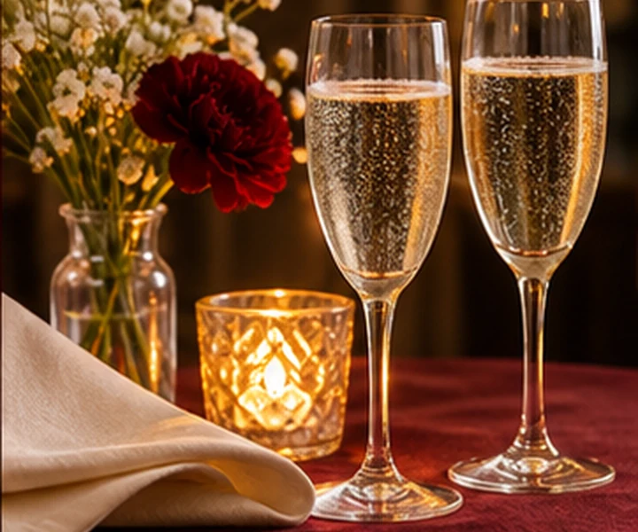

◆ CENA PRIVADA · SOLO DOS CUBIERTOS
✳
Tapas FODMAP
para vencer
al FOMO.
Porque perderse una buena tapa no entra en nuestros planes. Hoy eliges tú. Yo pongo las ganas de verte sonreír.
Abrir nuestra carta11 pequeños caprichos · 1 noche especial

MESA 02reservada con cariño
bon appétit, mi amor
No es solo una cena. Es una excusa para celebrar lo nuestro.
✷TU ELECCIÓN, MI PLAN FAVORITO
¿Qué te apetece esta noche?
Escoge tres tapas. Cuando las tengas, te prepararé un ticket de restaurante muy especial.
Tu pequeña comanda0 / 3
- Aquí aparecerán las tapas que elijas ♡
UN DETALLE DE LA CASA
♡
Lo mejor del menú siempre serás tú.
Sea cual sea tu elección, esta noche está preparada con mucho cariño.